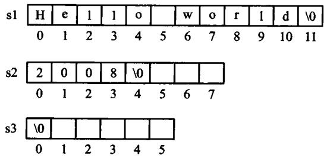
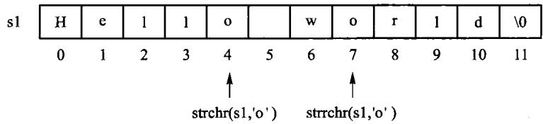
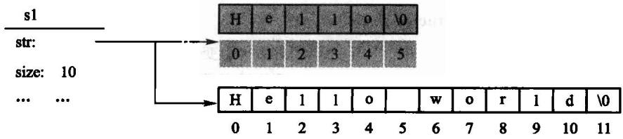
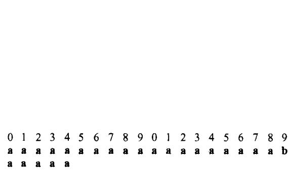
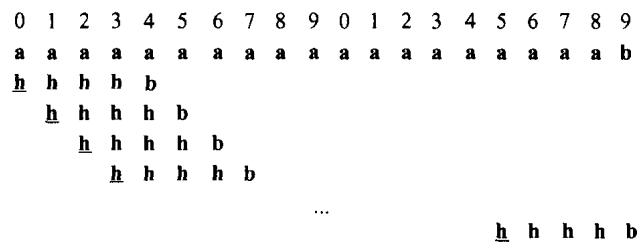
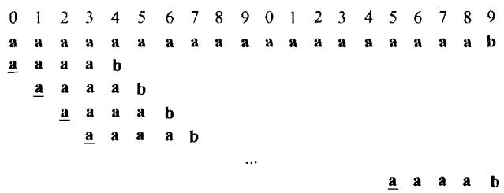

字符串是字符的有限序列。先区分「保存字符串」的类与「在文本中找模式」的算法：前者处理容量、 复制和下标边界，后者处理比较顺序。朴素匹配在失配后移动模式；KMP 预先计算 next 信息，避免 重复比较已经知道相等的前缀。
源码：字符串类·教学版、 字符串类·工程版、 字符串示例、 模式匹配、 匹配示例。
#先跑一遍
// 第 4 章「先跑一遍」：用教学版 String 走一遍 append / substr / find。
// 编译运行：
// g++ -std=c++17 -I code/ch04/string_class code/ch04/string_class/demo.cpp -o demo && ./demo
#include "teaching.hpp"
#include <iostream>
int main() {
String text = "Hello"; // 隐式转换：String(const char*)
text.append(' ').append('C').append('+').append('+');
std::cout << "拼接后: " << text.c_str() << '\n';
const String slice = text.substr(6, 3);
std::cout << "子串: " << slice.c_str() << '\n';
// find 返回 optional：有值才解引用
std::cout << "首次出现 C 的下标: ";
if (const auto found = text.find('C')) {
std::cout << *found << '\n';
} else {
std::cout << "无\n";
}
}c++ -std=c++17 -Wall -Wextra -Werror -Icode/ch04/string_class \
code/ch04/string_class/demo.cpp -o /tmp/str-demo
/tmp/str-demo拼接后: Hello C++
子串: C++
首次出现 C 的下标: 6缓冲区仍是手写的 char*，换成 std::string 这一节就没了。find 找不到时返回空 optional，不用 -1 和位置 0 抢同一个数字。
图4.12 自己的那对串，原书两个匹配算法都返回 11，正确答案是 10：
#include "modern.hpp"
#include <iostream>
int main() {
const char* text = "abcddabcababcdaabcababcdaabcabaa";
const char* pattern = "abcdaabcab";
const auto naive = dsa::naive_search(text, pattern);
const auto kmp = dsa::kmp_search(text, pattern);
std::cout << "图4.12 的串，正确起始下标是 10\n";
std::cout << "朴素: " << (naive ? static_cast<long>(*naive) : -1) << '\n';
std::cout << "KMP: " << (kmp ? static_cast<long>(*kmp) : -1) << '\n';
std::cout << "原书返回 11，一律差 1\n";
}c++ -std=c++17 -Wall -Wextra -Werror -Icode/ch04/pattern_matching \
code/ch04/pattern_matching/demo.cpp -o /tmp/kmp-demo
/tmp/kmp-demo图4.12 的串，正确起始下标是 10
朴素: 10
KMP: 10
原书返回 11，一律差 1本文件的地位：《数据结构与算法》（张铭、王腾蛟、赵海燕，高等教育出版社 2008） 第 4 章的现代化重排（4.1 字符串概念、4.2 存储结构与实现、4.3 模式匹配）。
书里印的每一段 C++ 都来自
code/ch04/string_class/与code/ch04/pattern_matching/， 真正编译、真正跑过（tools/check_doc.py的 R3 逐字核对）。原书那份写法错在哪、 改了什么、什么刻意没改，逐条记在两个单元各自的legacy.md。本章有一处不是写法问题，是算法结果错：原书两个模式匹配算法返回的位置都差 1。 详见 4.3.1 节末。
#4.1 字符串的基本概念
字符串（string）是组成元素（结点）为单个字符的线性表，简称「串」。一个字符串可以是一个单词、 一个句子、一篇文章，或者一个文件的内容。串中所包含的字符个数称为串的长度；长度为零的串 称为空串，不包含任何字符内容。
尽管字符串是一种特殊的线性表，但其逻辑结构与线性表相比存在两点区别：
- 字符串的数据对象约束为字符集；
- 线性表的基本操作大多以「单个元素」为操作对象，而字符串的基本操作通常以「串的整体」 作为操作对象——拼接、复制、抽取子串、模式匹配，动的都是一整段。
子串。 设 s1=a0a1a2⋯an−1、s2=b0b1b2⋯bm−1（0≤m≤n）是两个 字符串，ai 和 bj 均为字符集中的字符。如果存在整数 i（0≤i≤n−m），使得对任意 j=0,1,⋯,m−1 都有 bj=ai+j 同时成立，则称字符串 s2 是 s1 的子串， 或称 s1 包含 s2。空字符串是所有字符串的子串，任何串都是其自身的子串；如果 str 的一个 子串非空且不为 str 自身，则称其为 str 的一个真子串。例如 "quick"、"jump"、"fox"、 "brown dog" 均为 "The quick brown dog jumps over the lazy fox" 的真子串。4.3 节的模式匹配 问题，问的就是「一个串是不是另一个串的子串，如果是，从哪个位置开始」。
原书【代码4.1】给出字符串的抽象数据类型。那份声明有三处今天必须改：
- 类名是小写的
string。 在任何using namespace std;的翻译单元里， 它与std::string构成歧义。原书正文随后又改用大写String， 同一章里两个名字混用。 int isEmpty();用int表达布尔，int find(const char c, const int start);用-1表示"没找到"——与"位置 0"只差一个符号，调用方漏判就会把 "没找到"当成"匹配在开头"。- 修改器按值返回：
string append(const char c);、string concatenate(const char* s);都返回string而非引用。代码4.1 只有声明没有函数体，所以不能断定原书会丢结果； 能断定的是签名含混——调用方无从判断s.append('x');是改了s， 还是返回了一个新串而s原封不动。
本书的 String 把这三处分别改为：类名大写、bool empty()、 std::optional<size_type> find(...)、修改器返回 String&。
#4.1.1 字符编码
字符串的逻辑元素是字符，内存中却保存编码单元。计算机只能识别 0、1 组成的字节，因此实际 字符集的「字符」在内存中需要用「字节」来表示，这就是所谓的字符编码。
在 C/C++ 等程序设计语言中，字符类型是单字节的基本数据类型，采用 ASCII（American Standard Code for Information Interchange，美国标准信息交换码）编码标准，每个字符用一个字节表示， 其中低 7 位表示字符，最高位均为 0。ASCII 编码集中包含 128 个字符：编号为第 0～32 号及第 127 号的 34 个字符为控制字符或通信专用字符，其余编号处于第 33～126 号之间的 94 个字符为 通用字符。控制符包括 LF（换行）、CR（回车）、FF（换页）、DEL（删除）、BEL（振铃）等，通信专用 字符则有 SOH（文头）、EOT（文尾）、ACK（确认）等；通用字符包括常用的 52 个大小写字母、10 个 数字以及若干标点符号和运算符号，其中大写字母的编号范围是 65～90，小写字母是 97～122， 10 个数字是 48～57。
制定于 20 世纪 60 年代的 ASCII 标准没有考虑日后容纳中文、阿拉伯文等多种国际语言文字符号的 统一编码。在发展过程中，不同的语言形成了各自独立的字符编码系统，这些编码系统有可能使用 相同的编号来表示各自不同的字符：中文、日文和韩文尽管均采用两个字节的编码方式，但在编码上 存在冲突；每种语言都存在多种编码方式，例如中文的 GB2312-80（中文简体国标码，包括 6763 个 汉字）、BIG5（中文繁体编码，容纳 13053 个汉字），日文的 S-JIS、JIS 以及韩文 Wansung 码等。 这就导致不同语言系统之间进行文档交流非常困难——计算机看到的只是编码后的数字，而两种编码 可能使用相同的数字代表两个不同的字符。
为了解决这些互通问题，产生了「通用文字符号编码标准」UNICODE。简单地说，UNICODE 是一种 可伸缩的编码：既可以容纳多种语言文字的大编码集，同时又可以缩减，允许用单字节表示常用的 ASCII 符号。今天最常见的落地形式是 UTF-8——它以 1～4 个字节编码一个 Unicode 码点，且与 ASCII 完全兼容。
由此产生一条 2008 年的书还讲不到的结论：C++ 的 char 是一个字节，不等于一个「人眼看到 的字符」。std::string::size() 返回的是字节数，不能用来数 Unicode 字符；要数字符就得按 UTF-8 解码，或使用明确的 Unicode 库。字面量 u8"..." 表示 UTF-8 字节序列。好在编码本身不改变 字符串概念和操作的本质：查找、拼接、抽取子串的接口语义与编码无关，所以本书与原书一样， 以 ASCII 为主，基本不涉及多国语言混排的问题。
#4.1.2 字符的编码顺序
为了便于进行字符串的比较和运算，字符编码表一般遵循约定俗成的「偏序编码规则」。这里所说的 字符偏序，是指根据字符的自然含义，某些字符间具有一定的次序，例如数字符号 0,1,2,⋯,9 的大小次序；为了符合其自然次序，在对这些字符编码时使其在字符集中的编码顺序和自然次序一致。 令函数 encode(x) 为符号 x 到其 ASCII 编码（序号）的映射函数，则有
即 10 个数字符号的编码是连续递增的。对于字母符号 A,B,C,⋯,Z 也遵循类似的偏序规则， a,b,⋯,z 同理。于是任意两个字符 ch1 和 ch2 均可用其编码值来直接比较大小；对于字母 而言，这种大小次序的含义就是按照字典编目次序。两个字符串按其构成的字符顺序比较大小，得到 的结果是："monday" < "sunday" < "tuesday"，"123" < "1234" < "23"。注意这种次序仅仅是 字符串的字典次序，与日常生活中人们对其理解的次序不同——星期一在星期二之前，整数 123 比 23 要大。以上讨论的比较次序并不限于 ASCII 编码，也适合 GB2312 等其他语言文字在排序方面的 需要。
ASCII 保留了数字 0–9、大写字母和小写字母各自连续递增的区间，所以同一区间内可用编码值比较。但这不是通用的语言学排序规则：字符的编码值比较是按码元的字典序，大小写、重音、中文排序都可能需要额外的 locale 或排序键。字符串比较先比较第一个不同的编码单元；若一个是另一个的前缀，较短者更小。因此对 std::string 而言 "123" < "1234" < "23"，但这不是整数大小比较。比较前必须先约定编码和规范化方式，不能把“字节序”误当成“自然语言顺序”。
这里有个 C++ 特有的坑，必须点破：上面那条结论只对 std::string 成立。两个字符串字面量之间写 <，比的是两个数组的地址，不是内容：
$ g++ -std=c++17 -Wall -Wextra litcmp.cpp
litcmp.cpp:7:25: warning: comparison between two arrays [-Warray-compare]
7 | std::cout << ("123" < "1234") << ' ' << ("1234" < "23") << '\n';
| ~~~~~~^~~~~~~~
$ ./litcmp
true true # ("123" < std::string("1234"))、(std::string("1234") < "23")
false true # ("123" < "1234")、("1234" < "23")——第一个的答案反了同一行代码，两边只要有一边是 std::string，比的就是内容；两边都是裸字面量，比的就是地址，而地址由编译器摆放决定。所以本书凡是比较字符串，一律先落到 String/std::string 上，再谈编码顺序。
#4.2 字符串的存储结构和实现
选择字符串的存储结构时要考虑字符串的变长特点，同时需结合具体的应用分析各种存储方案的 利弊。某些应用中字符串的长度变化非常显著——短如单词，长为文件；从统计分布来看，字符串 长度分布的方差很大。对于这种情况，用静态长度的向量作为存储结构是不恰当的。 字符串的变长 特点是无法回避的：拼接、查找、置换和模式匹配等操作本身都涉及变长的字符串操作，这些操作 时间开销大，必须精心设计算法、选择恰当的串存储结构。本节重点讨论程序执行过程中的字符串 变长存储问题。
#为什么这一节没有 Python 版
本节的对象是一个自管理的字符缓冲区：长度、容量、结尾空字符、深复制和移动后的源对象状态都属于接口契约。Python str 是不可变的运行时对象，list 也不会让读者实现缓冲区的分配、释放和强异常保证；把它们当作“字符串类的 Python 版”会跳过本节的存储布局和所有权问题。因此算法 4.3 的模式匹配有 Python 版，4.2 的字符串类只保留 C++ 实现。
String 采用动态变长的存储结构：内部持有一块以 '\0' 结尾的字符数组和当前长度， 构造时按初值长度分配，赋值时按新长度重新分配。这正是本节要教的内容， 所以缓冲区是裸 char*——换成 std::string 这一节就没了。
#4.2.1 字符串的顺序存储
字符串用一段连续字符数组按字符的逻辑顺序存储，末尾保留 \0 作为 C 风格字符串的结束标志，并单独记录不含终止符的长度 length。因此容量至少要能容纳 length + 1 个字符；\0 不是字符串内容，不能计入长度。
顺序存储的字符串适合访问字符串中单个字符或连续的一组字符：按下标取第 i 个字符是 O(1)。 但进行插入和删除（增减字符）操作就不是很方便，需要移动插入或删除点后面的所有字符；拼接和 抽取子串也要复制一段连续区域。若容量不足，通常重新申请更大的数组、复制旧内容、释放旧数组， 再更新指针和长度；这也是后面 String 类需要自己维护所有权、拷贝和析构的原因。
C/C++ 的标准字符串是顺序存储方案的典型代表：在程序中用 char s[M]; 的形式定义字符串变量， 其中 M 是整型常数，表示字符数组的长度。标准字符串需要在其末尾带一个结束标记 '\0' 来表示 串的结束，因此字符串的长度不能超过最大长度 M - 1。原书图 4.1 画的就是
char s1[12] = "Hello world";
char s2[8] = "2008";
char s3[6];这三个数组在内存里的样子。存储字符串的数组是静态定长的，程序运行中一旦产生更长的字符串 就会造成数组溢出，这给编写和调试程序带来不便——这正是本节接下来要用一个类来解决的问题。
还有一处「字符串处理中非常容易犯的错误」值得单独点出：C++ 中的字符数组是用字符指针定义的， 指向字符数组的始址，赋值语句 s1 = s2 不能被理解为把 s2 的内容复制到 s1。这也是本书的 String 必须自己写拷贝赋值运算符的原因（4.2.2 节）。

图 4.1 C 风格字符串的变量说明示意。'\0' 是 ASCII 里 8 位全 0 的 NULL 符，只作结束标记用，不算内容；说明变量时可以用字符串常量给初值，也可以不给——图中的 s3 没给初值，存的就是空串。
标准库 <string.h>（C++ 里是 <cstring>）提供了若干处理字符串的常用函数，原书表 4.1 列出了 常用的几个：
表 4.1 标准串函数
| 函数名 | 功能说明 |
|---|---|
size_t strlen(char* s) |
求字符串 s 的当前长度，不计结束符；空字符串的长度为 0 |
char* strcpy(char* s1, const char* s2) |
将 s2 复制到 s1，并返回一个指向 s1 开始的指针 |
char* strcat(char* s1, const char* s2) |
将 s2 拼接到 s1 尾部 |
int strcmp(const char* s1, const char* s2) |
比较 s1 和 s2：全同返回 0，s1 大于 s2 返回正数，小于返回负数 |
char* strchr(char* s, char c) |
定位到 s 中第一次出现字符 c 的位置，没有则返回空指针 |
char* strrchr(char* s, char c) |
从尾部逆向定位，返回最后一次出现 c 的位置，没有则返回空指针 |
此外，输入/输出的处理也是标准串函数库中的主要组成部分，例如 cin >> s1; 从标准输入读取 字符串到串变量 s1，cout << s1; 把 s1 的内容输出到标准输出。
例如对图 4.1 中的 s1 调用 strchr(s1, 'o') 和 strrchr(s1, 'o')，将分别得到字符 'o' 的第一次和 倒数第一次出现位置：

图 4.2 在字符串 s1 中定位字符 'o'。两个函数返回的都是指针，指向找到的那个字符；找不到返回空指针。本书的 String 用下标和 std::optional 表达同一件事——「没找到」不再靠一个特殊指针值来表示。
#4.2.2 字符串类 class String 的存储结构
字符串的顺序存储方式简单易实现，C++ 的标准串及其相关的标准函数也提供了若干实用的函数， 但终归难以避免其静态定长的局限；而在实际应用中，大多的字符串变量具有动态变化的长度。
那么为什么不用链式的变长结构？因为每一个链指针比一个字符所占的存储空间还大——用链表 存字符，指针域的开销会几倍于数据域（回到 2.4 节那条「指针所占比例超过 1:1 就要慎重」的判据）。 所以字符串的变长存储走的是另一条路：仍然顺序存放，但把这块缓冲区的分配与释放交给一个类 去管。
顺序存储只说了「字符放在哪」，还没说「这块内存归谁、什么时候还」。 把它包成一个类之后，这两件事才有着落：类里存一个指向字符数组的指针和一个长度， 构造时申请、析构时释放、拷贝时另开一份——本节的教学内容就是这套变长存储管理。
#教学版：完整实现
下面是一份完整的、能直接编译运行的字符串类。一个文件、一个类。 后面 4.2.2、4.2.3 两节就是把它拆开逐段讲。
// 字符串类 String —— 教学版。原书【代码4.1】【算法4.3】【算法4.4】【算法4.5】。
//
// 一个文件、一个类、能直接编译运行，给「第一次读这一节」的人看。
//
// 本节的教学内容是**字符串的变长存储管理**：动态分配、按长度重新开辟、拷贝与释放。
// 所以这里是手写的 char* 缓冲区，不是 std::string——换成 std::string，这一节就没了。
//
// 与 modern.hpp（工程版）的分工：
// 教学版 三法则（析构 + 拷贝构造 + 拷贝赋值）；
// 工程版 补齐移动语义（移动之后 data_ 为空，读取路径要多一层 raw() 兜底）、
// 比较运算符全家、copy-and-swap。
// 两份都在闸门里真编译真运行。先读这一份，4.2a「进阶（选读）」再读那一份。
#pragma once
#include <cstddef>
#include <cstring>
#include <optional>
#include <stdexcept>
class String {
public:
using size_type = std::size_t;
// 空串。**注意它仍然申请了 1 个字节**，里面放一个 '\0'。
// 这样 c_str() 永远返回一个合法的 C 字符串，调用方不必先判空指针。
String() : data_(new char[1]), size_(0) {
data_[0] = '\0';
}
// 从 C 字符串构造。参数是 `const char*` 而不是原书的 `char*`——
// 原书那个签名让它自己书里的例子 `String s1 = "Hello";` 从 C++11 起就编译不过：
// 字符串字面量的类型是 const char[6]，绑不到 char*。
//
// 这里**故意不加 explicit**，为的就是保住 `String s1 = "Hello";` 这种写法。
String(const char* s) { // NOLINT(google-explicit-constructor)
if (s == nullptr) {
throw std::invalid_argument("String: 不能用空指针构造字符串");
}
size_ = std::strlen(s);
data_ = new char[size_ + 1];
std::memcpy(data_, s, size_ + 1); // +1 把结尾那个 '\0' 也带上
}
~String() { delete[] data_; }
// 三法则：自己管着 new 出来的缓冲区，拷贝必须自己写。
// 原书正文里描述过赋值时「必须释放 s1 的原有空间」，却没有把拷贝构造和
// 拷贝赋值作为清单给出。只有析构没有这两个，一次 `String b = a;` 就是二次释放。
String(const String& other) : data_(new char[other.size_ + 1]), size_(other.size_) {
std::memcpy(data_, other.data_, size_ + 1);
}
String& operator=(const String& other) {
if (this == &other) {
return *this;
}
char* fresh = new char[other.size_ + 1]; // 先备好新的
std::memcpy(fresh, other.data_, other.size_ + 1);
delete[] data_; // 再释放旧的
data_ = fresh;
size_ = other.size_;
return *this;
}
size_type size() const { return size_; }
size_type length() const { return size_; }
bool empty() const { return size_ == 0; }
const char* c_str() const { return data_; }
void clear() {
char* fresh = new char[1];
fresh[0] = '\0';
delete[] data_;
data_ = fresh;
size_ = 0;
}
// 按下标取字符。越界抛异常，不是返回一个随便什么值。
char at(size_type index) const {
if (index >= size_) {
throw std::out_of_range("String::at: 下标越界");
}
return data_[index];
}
// 在串尾添加一个字符。
//
// **变长存储的代价在这里看得最清楚**：字符串长度变了，就得重新申请一块、
// 把老内容拷过去、再把老的还回去。所以 append 一个字符是 O(n)，不是 O(1)。
//
// 返回自身引用，于是 `s.append('a').append('b')` 可以连着写；
// 原书【代码4.1】声明的是**按值返回**，调用方从签名看不出它改不改本串。
String& append(char c) {
char* fresh = new char[size_ + 2]; // 老内容 + 新字符 + '\0'
std::memcpy(fresh, data_, size_);
fresh[size_] = c;
fresh[size_ + 1] = '\0';
delete[] data_;
data_ = fresh;
++size_;
return *this;
}
// 把 s 接在本串后面。同样是「重新申请、拷两段、释放旧的」。
String& concatenate(const char* s) {
if (s == nullptr) {
throw std::invalid_argument("String::concatenate: 空指针");
}
size_type extra = std::strlen(s);
char* fresh = new char[size_ + extra + 1];
std::memcpy(fresh, data_, size_);
std::memcpy(fresh + size_, s, extra + 1);
delete[] data_;
data_ = fresh;
size_ += extra;
return *this;
}
// 【算法4.5】从 pos 开始取长度至多 len 的子串。
//
// 原书在 `pos >= size` 时 `return NULL;`。那不是「返回空串」——
// NULL 会去走 String(char*) 构造函数，然后 strlen(nullptr) 当场段错误。
// 这里越界就抛异常，让错误停在发生的地方。
// pos == size() 是合法的，得到空串（「从末尾取 0 个字符」）。
String substr(size_type pos, size_type len) const {
if (pos > size_) {
throw std::out_of_range("String::substr: 起始位置越界");
}
size_type available = size_ - pos;
size_type take = (len < available) ? len : available; // 原书的 if (n > left) n = left
String result;
char* fresh = new char[take + 1];
std::memcpy(fresh, data_ + pos, take);
fresh[take] = '\0';
delete[] result.data_;
result.data_ = fresh;
result.size_ = take;
return result;
}
// 【算法4.4】从 start 开始查找字符 c。找到返回下标，没找到返回空 optional。
// 原书用 -1 表示没找到——与「位置 0」只差一个符号，忘了判就会读错位置。
std::optional<size_type> find(char c, size_type start = 0) const {
for (size_type i = start; i < size_; ++i) {
if (data_[i] == c) {
return i;
}
}
return std::nullopt;
}
// 【算法4.3】三路比较：负 / 零 / 正 表示 小于 / 等于 / 大于。
//
// 原书自己实现了一个 strcmp，返回值固定为 -1/0/1，并在正文里说
// 「这与 C/C++ 语言中通常的大小比较习惯不一致」——其实不一致的是原书自己：
// 标准 strcmp 返回的就是差值的符号，调用方只该看符号，不该看具体数值。
int compare(const String& other) const {
return std::strcmp(data_, other.data_);
}
private:
char* data_; // 以 '\0' 结尾的字符数组，永远非空
size_type size_; // 字符个数，不含结尾的 '\0'
};
inline bool operator==(const String& a, const String& b) { return a.compare(b) == 0; }
inline bool operator!=(const String& a, const String& b) { return a.compare(b) != 0; }
inline bool operator<(const String& a, const String& b) { return a.compare(b) < 0; }#构造与所有权
原书【算法4.4】的构造函数有两处问题。
第一处，assert(str != '\0') 本身就编译不过：'\0' 是 char 而不是空指针常量， 拿指针与它比较是 ill-formed（error: ISO C++ forbids comparison between pointer and integer）。 而且即便改写成 assert(str != nullptr) 也是无效断言——new 失败时抛 std::bad_alloc，从不返回空指针；assert 更会在 NDEBUG 构建里整个消失。
第二处，参数类型是 char*。原书 4.2.2 节自己写下：
String s1 = "Hello";隐含地调用构造函数String::String(char* s)
而字符串字面量的类型是 const char[6]，转成 char* 在 C++11 起已被移除。 GCC 默认降级为警告，在本书的 -Werror 构建下即是错误。
还有一处原书没有做的检查：构造函数对 s == nullptr 毫无防备—— 而 4.2.3 节的 Substr 恰好会喂给它一个空指针（见 4.2.3 节）。
原书的类里有 ~string()，却从未把拷贝构造与拷贝赋值作为清单给出 （正文描述过赋值时"必须释放 s1 的原有空间"，但没有代码）。 只要有析构而没有这两个，一次 String b = a; 就是二次释放—— 与第 2、3 章是同一个错误。
教学版按三法则补齐了这两个（析构 + 拷贝构造 + 拷贝赋值）， 拷贝赋值走的是「先备好新缓冲区，再释放旧的，最后接管」——顺序反过来， 一旦 new 抛异常，对象就停在「指针已释放」的破碎状态。
原书用两张图说明这套变长管理。String s1 = "Hello"; 会在动态存储区开一个长度为 6 的字符数组（5 个字符加结束符），把初值顺序存进去：

图 4.3 创建字符串：对象里只有一个指针和一个长度，字符本体在堆上。
再写 String s2 = "Hello world"; s1 = s2;，新内容比旧的长，装不下，于是必须先另开一块新数组、把内容复制过去，旧数组（图 4.4 中的灰格）释放掉，str 改指新数组：

图 4.4 赋值运算：String 按当前串长动态调整空间，这就是「变长管理」的全部含义。注意图上那块灰色的旧空间——它必须释放，而且必须在新空间准备好之后再释放。原书正文说到了这一步，却没有给出拷贝赋值的代码；漏掉它，String b = a; 就是二次释放。
工程版还多两个移动操作，见 4.2a。
#4.2.3 字符串运算的实现
#追加与拼接
append(char) 与 concatenate(const char*) 的形状是一样的三步： 重新申请一块、把老内容拷过去、释放旧块。所以追加一个字符是 O(n)，不是 O(1)—— 这就是变长串管理的代价，也是后面章节讨论"预留容量"的动机。
两者都返回 String&，于是 s.append('a').append('b') 可以连着写， 而且调用方从签名一眼看出它改的是本串。原书【代码4.1】声明的是按值返回， s.append('x'); 到底改不改 s，从签名看不出来。
#抽取子串
原书【算法4.5】在起始位置越界时写 return NULL;。这里的返回类型是 String， 所以 NULL 不是"空串"：它先转成 char*，再走 String(char*) 构造函数， 于是 strlen(nullptr)。这段能编译，崩在运行期：
$ ./s7
准备调用 s.Substr(99, 1)——原书会走到 return NULL 那一支
runtime error: null pointer passed as argument 1, which is declared to never be null
AddressSanitizer:DEADLYSIGNAL
ERROR: AddressSanitizer: SEGV on unknown address 0x000000000000本书越界就抛 std::out_of_range，让错误停在发生的地方， 而不是变成调用方某处的段错误。
pos == size() 是合法的，得到空串——与"从末尾取 0 个字符"的直觉一致； len 超出剩余长度时截断而不报错，与原书的 if (n > left) n = left; 语义一致。
#查找与比较
对应【算法4.4】的 find 返回 std::optional<size_type>：找到是下标，没找到是空盒子。 原书用 -1 表示没找到——与"位置 0"只差一个符号，调用方漏判就会把 "没找到"当成"匹配在开头"。这与 2.2.2 节 getPos 那一处是同一个问题、同一个改法。
关于【算法4.3】：原书自己实现了一个 strcmp，固定返回 −1/0/1， 并在正文里说"这与 C/C++ 语言中通常的大小比较习惯(0和非0)不一致"。 其实标准 strcmp 返回的就是差值的符号，调用方本来就只该看符号—— 不一致的是原书固定返回 ±1 的写法。本书保持标准语义，并据此提供关系运算符。
（另外补一句实测结论：原书那个与标准库同名同签名的 strcmp 定义， 既能编译也能链接，不构成冲突——这是我们查过之后否掉的一个猜测， 记在 legacy.md 第五节。）
#4.2a 进阶（选读）：从教学版到工程版
这一节可以整节跳过。 工程版在 code/ch04/string_class/modern.hpp。 它比教学版多的东西里，只有一件是这一章特有的：移动之后的那个空壳怎么办。
// 原书只在正文里描述了赋值时"必须释放 s1 的原有空间(delete [] s1.str)"，
// 却没有把拷贝构造和拷贝赋值作为清单给出。只要有析构函数而没有这两个，
// 一次 `String b = a;` 就是二次释放——与第 2、3 章是同一个错误。
String(const String& other) : data_(new char[other.size_ + 1]), size_(other.size_) {
// 注意读的是 other.raw() 不是 other.data_：源可能是被移动过的对象（data_ 为空），
// 从空指针 memcpy 即便长度为 0 也是未定义行为。
std::memcpy(data_, other.raw(), size_ + 1);
}
String& operator=(const String& other) {
if (this != &other) {
String copy(other); // 拷贝并交换：自赋值安全，且拷贝失败时原对象不受影响
swap(copy);
}
return *this;
}
/// 移动**不分配**：直接接管缓冲区，把对方置为 nullptr。
/// 被移动方仍是一个可用的空串——读取路径统一走 raw()，它在 data_ 为空时返回 ""。
/// （若在这里 new 一块空缓冲区来"修复"对方，移动就不再是 noexcept 的了。）
String(String&& other) noexcept : data_(other.data_), size_(other.size_) {
other.data_ = nullptr;
other.size_ = 0;
}
String& operator=(String&& other) noexcept {
if (this != &other) {
delete[] data_;
data_ = other.data_;
size_ = other.size_;
other.data_ = nullptr;
other.size_ = 0;
}
return *this;
}
~String() { delete[] data_; }移动操作声明为 noexcept，因此不能在里面分配——所以被移动方的 data_ 只能置空，不能塞一块新的 1 字节缓冲区进去。可是教学版承诺过 「c_str() 永远不是空指针」，这个承诺不能因为被移动过就作废。
工程版的解法是加一个私有的 raw()：data_ 为空时返回一个静态空串。 读取路径全部走它，于是「被移动之后仍是可用的空串」这个保证不花任何分配就成立。 教学版没有移动操作，也就不需要这一层。
其余的差别与前几章相同：[[nodiscard]]、noexcept、copy-and-swap、 关系运算符全家（< > <= >= 都由 compare() 派生）。
#4.3 字符串的模式匹配
字符串模式匹配是一种常用的运算。所谓模式匹配（pattern matching），简单地说就是在文本 （text）中寻找一个给定的模式（pattern）：通常文本都很大，而模式则比较短小。典型的例子包括 文本编辑和 DNA 分析——编辑文本时人们经常使用「替换」命令对文中的某个字符串或语句进行替换， 此时便需先找到要被替换的内容；在文本编辑器中，模式通常为一个单词，长度在 10 个字符左右， 而文本的长度则从几百字到上百万字不等。在生物信息中，DNA 信息一般由 A、C、G、T 这 4 个符号 组成，基因一般也就是几百个字符的长度，而人类染色体的长度却有 30 亿之多。显而易见，这些 应用对匹配算法的效率要求很高。
模式匹配有精确匹配和近似匹配两类。精确匹配（exact matching）：如果在目标 T 中至少一处 存在模式 P，则称匹配成功，否则即使目标与模式只有一个字符不同也算匹配失败。想要找的词可以 是单选的（例如 "set"），也可以是多选的——例如模式 "s?t" 表示任何以 s 打头、以 t 结尾、 中间夹一个字符的串都可与之匹配（"sat"、"set"、"sit" 都可以），模式中的符号 ? 称为通配符； 更复杂的模式可以采用正则表达式来表示。近似匹配（approximate matching）：如果模式 P 与 目标 T（或其子串）存在某种程度的相似，则认为匹配成功；常用的衡量字符串相似度的方法，是根据 一个串转换成另一个串所需的基本操作（插入、删除、替换）数目来确定的。本节与原书一样，只讨论 精确匹配中的单选情况，不涉及通配符、正则表达式与近似匹配。
给定目标串 T 和模式串 P，模式匹配要回答：P 是否作为 T 的连续子串出现，若出现，首次出现 在哪个位置。用原书的记号写出来：Tj、Pj 表示其在位置 j 上的字符，|T|、|P| 表示长度， an 表示由 n 个字符 a 组成的字符串，P 和 T 的第一个字符都从位置 0 开始；模式匹配 就是要在 T 中找到一个 j，使得
否则称模式匹配失败。记住「都从位置 0 开始」这句话——4.3.1 节会看到，原书自己的两个算法 都没有遵守它。
本节的教学内容是算法本身，因此下面的实现用 std::string_view 接收输入： 不拷贝、不拥有，把注意力留在匹配过程上。字符串容器的实现是 4.2 节的事。
#4.3.1 朴素的模式匹配算法
朴素算法的思路直白：把模式的首字符对齐目标的每一个位置，逐字符比较；某次比较失败（称为一次 失配）时，就把模式对于 T 向右移动一个字符位置，重新开始下一趟匹配。如此不断重复，直到 某趟配串成功返回，或者比较到目标串的结束也没有出现配串，则匹配失败。
时间效率分情况看。 最佳情况是目标首位置开始的子串便是所要找的配串，只要通过 |P| 次比较 即可完成匹配，代价 O(|P|)，与模式的长度成正比。如果最终匹配失败，其最佳情况是每次都在模式 的首字符比较时就不等、于是右移一位，直到在目标的 |T|−|P| 位置处依然与模式的首字符不匹配， 整个过程中至少比较了 (|T|−|P|+1) 次，时间代价 O(|T|−|P|+1)。
最差情况需要 O(|T|⋅|P|)：例如目标串 T 形如 an，而模式 P 形如 am−1b，每趟都 是在模式的最后一个字符处不匹配，即每趟都需要进行 |P| 次比较，再把模式右移一位、再次从模式 头比较，最多需要 (|T|−|P|+1) 趟，因此总共需要比较 |P|(|T|−|P|+1) 次。此类情况很少 出现在文本中，却经常出现在 DNA 信息和图像信息中——这正是朴素算法在生物计算里不够用的原因。
平均代价同时依赖于目标和模式中字符的分布概率。假设一个字符串中只允许使用 2 种字符，那么使用 任一字符的概率为 1/2：对于第 j 趟扫描来说，仅比较一次的概率为 1/2，比较两次的概率为 1/4，比较 m 次的概率为 2−m，因此平均情况下第 j 趟扫描的比较次数为 ∑k=1|P|k/2k<2，平均比较次数为 2(|T|−|P|+1)<2|T| 次。若运用马尔科夫链 （Markov Chain）的有关理论，可以估算一个更好的比较次数 2|P|+1−2；在通用的情况下，如果 字符串中允许使用的字符数目为 |A|，则平均比较次数为 (|A||P|+1−|A|)/(|A|−1)。
问题出在哪里。 尽管朴素算法思想简单易懂，但效率较低：一旦某趟匹配中发生失配，无论模式的 具体情况如何，都采用模式右移一位开始下一趟的匹配。这会导致很多冗余的比较，因为目标 T 中 的字符会多次与模式中的字符进行比较，造成目标的回溯。例如模式 P= "abacab" 与目标 T= "abacaabaccabacabaa" 的第 1 趟比较中，发现 P5≠T5 时把模式右移一位、开始第 2 趟， 使得 P0 与 T1 比较；其实之前的匹配中 T1 已与 P1 比较过而且相等，由于 P1 与 P0 不同，因此可知 P0 与 T1 肯定不等，根本用不着重新比较。换言之，利用模式本身的构成特征 以及上趟匹配的比较结果，就能知道 P0 与 T1 肯定不等。
一般来说，右移的位数越多效率就越好，但前提是要保证不能丢失 P 和 T 的任何可匹配子串。 Knuth、Morris、Pratt 等人发现，每次右移的位数存在，且与目标串无关，仅依赖于模式本身， 因此他们对朴素算法进行了改进：预先处理模式本身，分析其字符分布状况，为模式中的每一个字符 计算失配时应该右移的位数——此即 4.3.2 节所谓的字符串的特征向量，改进后的算法就是 4.3.3 节 的 KMP 算法。
/// 朴素模式匹配：返回 pattern 在 text 中首次出现的**起始下标**；没有则 std::nullopt。
///
/// 与原书【算法4.6】的关键差别是返回值：原书写的是 `return (j - pLen + 1);`，
/// 而在 0 起始的下标体系里正确的是 `j - pLen`——**原书这里差了 1**。
/// 用书中自己的例子可以当场看出来：T="abcddabcab..."、P="abcdaabcab" 匹配始于下标 10，
/// 原书返回 11（证据见 legacy.md 缺陷 1）。
///
/// 空模式约定返回 0（与 std::string::find("") 一致）；原书用 assert(m>0) 把它挡在门外，
/// 而 assert 在 NDEBUG 下会被整个编译掉。
[[nodiscard]] inline std::optional<std::size_t> naive_search(std::string_view text,
std::string_view pattern) {
const std::size_t n = text.size();
const std::size_t m = pattern.size();
if (m == 0) {
return std::size_t{0};
}
if (n < m) {
return std::nullopt;
}
std::size_t i = 0; // 模式下标
std::size_t j = 0; // 目标下标
while (i < m && j < n) {
if (text[j] == pattern[i]) {
++i;
++j;
} else {
j = j - i + 1; // 回退到本趟起点的下一个位置
i = 0;
}
}
return i >= m ? std::optional<std::size_t>(j - m) : std::nullopt;
}def naive_search(text: str, pattern: str) -> int | None:
"""朴素匹配：返回首次出现的 0 起始下标。"""
if not pattern:
return 0
i = 0
j = 0
while i < len(pattern) and j < len(text):
if text[j] == pattern[i]:
i += 1
j += 1
else:
j = j - i + 1
i = 0
return j - len(pattern) if i == len(pattern) else None失配时 j = j - i + 1 把目标下标退回本趟起点的下一个位置——这一步的"+1"是对的， 它表示"换一个起点重来"。
原书用 T = "abacaabaccabacabaa"、P = "abacab" 走了一遍全过程：第 1 趟在目标的 a 与模式的 b 处失配，模式右移一位重来，如此直到第 11 趟在子串处配上，返回首位置 10。

图 4.6 朴素匹配的示例。加粗带下划线的是当前失配的那一对字符。可以数一数目标里有多少字符被反复比较过——这些重复比较正是 KMP 要省掉的东西。
三种极端情况值得分开看。最好：目标开头那一段就是配串，比 |P| 次就完事，O(|P|)。

图 4.7 朴素匹配的最佳情况：第一趟就配上。
匹配失败中的最好情况：每趟都在模式首字符处就不等，右移一位再试，一共比较约 |T|−|P|+1 次，O(|T|−|P|+1)。

图 4.8 匹配失败的最佳情况：每趟只比一次就失配。
最坏：目标形如 an、模式形如 am−1b，每趟都要比到模式的最后一个字符才失配，|P|(|T|−|P|+1) 次比较，即 O(|T|⋅|P|)。

图 4.9 朴素匹配的最差情况。这种输入在自然语言文本里少见，在 DNA 序列和图像数据里却很常见——这正是需要 KMP 的实际理由。
平均情况依赖字符分布：字符表大小为 |A| 时，平均比较次数约 (|A||P|+1−|A|)/(|A|−1)，两个字符的极端情形下不到 2|T| 次。
#一处必须指出的错误：原书的返回值差 1
原书【算法4.6】与【算法4.8】在匹配成功时都写：
if (i >= pLen) return (j - pLen + 1);匹配成功时 j 已经走到匹配段的末尾之后，所以起始位置是 j - pLen。 那个 +1 是多余的。把原书两段代码照抄进程序，拿标准库的 find 做参照：
T=abc P=abc 原书朴素= 1 正确答案= 0
T=xabc P=abc 原书朴素= 2 正确答案= 1
T=aaab P=ab 原书朴素= 3 正确答案= 2
T=abcddabcababcdaabcababcdaabcabaa P=abcdaabcab 原书朴素= 11 正确答案= 10每一组都恰好多 1，最后一组正是书中图4.12 自己用来演示 KMP 的那对串。 原书用它逐趟画了匹配过程，却没有给出返回值，这个错误因此在书里没有暴露。
这不是排版或 OCR 造成的，有三重佐证：j - pLen + 1 在两个算法里独立印出、写法一致； 同一段代码里的 j = j - i + 1 说明作者用的就是 0 起始下标； 而 4.3 节开头的约定更是把这一点写死了——
P和T的第一个字符都从位置0开始。
本书的实现返回 j - m，并且每一条匹配用例都拿标准库的 find 逐个对拍， 再加 3000 组随机对拍。只断言"找到了"的测试，在原书那份实现下同样全绿—— 那样的测试等于没写。
#4.3.2 字符串的特征向量
KMP 的想法是：失配时不必把模式退回从头开始，因为已经匹配上的那一段本身携带了信息。 这句话抽象，用一个例子就清楚了。
设目标串 T = ababab d，模式 P = ababd，从 T 的位置 0 开始比：
位置: 0 1 2 3 4 5 6
T : a b a b a b d
P : a b a b d
↑ 这里失配（T[4]='a'，P[4]='d'）失配前已经匹配上了 abab 这四个字符。朴素算法到这里会把模式整体右移一位、从 T[1] 重新 逐字符比起——但这其实浪费了信息：我们已经知道 T[0..3] 就是 abab。
KMP 的做法是问：abab 的前缀和后缀里，最长的相同的一段是多少？
abab 的前缀: a, ab, aba
abab 的后缀: b, ab, bab
最长相同的一段: "ab"，长度 2这个 2 的意义是：abab 的末尾两个字符 ab，恰好也是 abab 的开头两个字符。而模式的开头 也是 ab。所以模式可以一次右移 4 − 2 = 2 位直接对上去，并且移过去之后前两个字符 不必再比——它们必然相同：
位置: 0 1 2 3 4 5 6
T : a b a b a b d
P : a b a b d
↑ 这两个已知相同，从这里继续比接着从 P[2] 与 T[4] 往下比，一路比到底，在位置 2 匹配成功。整个过程中 T 的下标从来没有 往回退过，这正是 KMP 优于朴素算法的地方：朴素算法最坏要把 T 的每个位置都当一次起点重来。
把「每个位置失配时该退到哪里」对模式的每个位置预先算出来，就是特征向量（next 数组）。 上面这个例子用本章的实现跑出来是：
next(ababd) = -1 0 -1 0 2
kmp_search("abababd", "ababd") = 2
std::string::find 对照 = 2next[4] = 2 正是「在 P[4] 处失配时，模式的比较位置退到 2」——和上面手推的一致。 （这里印的是原书【算法4.7】的优化版 next，所以中间会出现 −1；未优化版本的取值不同， 但失配后的落点等价。）
/// 计算模式的特征向量（next 数组），原书【算法4.7】的"优化版"。
///
/// 与原书的差别只有所有权：原书 `int* findNext(String P)` 用 `new int[m]` 返回裸数组，
/// 而书中**从未展示过与之配对的 delete[]**——每调用一次泄漏一个数组。
/// 计算过程一字未改，包括 `next[i] = next[k]` 这一步优化。
///
/// 空模式返回空向量；原书是 `assert(m > 0)`，而 assert 在 NDEBUG 下会被编译掉，
/// 于是 release 构建里 `new int[0]` 加 `next[0] = -1` 就是一次越界写。
[[nodiscard]] inline std::vector<next_type> build_next(std::string_view pattern) {
const std::size_t m = pattern.size();
std::vector<next_type> next(m);
if (m == 0) {
return next;
}
next_type i = 0;
next_type k = -1;
next[0] = -1;
while (i < static_cast<next_type>(m)) {
while (k >= 0 && pattern[static_cast<std::size_t>(i)] != pattern[static_cast<std::size_t>(k)]) {
k = next[static_cast<std::size_t>(k)]; // 沿已算好的特征值回退
}
++i;
++k;
if (i == static_cast<next_type>(m)) {
break;
}
const auto ui = static_cast<std::size_t>(i);
const auto uk = static_cast<std::size_t>(k);
// P[i] 与 P[k] 相等时可以直接借用 next[k]，省掉一次注定失败的比较——这就是"优化版"。
next[ui] = (pattern[ui] == pattern[uk]) ? next[uk] : k;
}
return next;
}def build_next(pattern: str) -> list[int]:
"""计算原书算法4.7的优化版 next 数组。"""
if not pattern:
return []
next_values = [-1] * len(pattern)
i = 0
k = -1
while i < len(pattern):
while k >= 0 and pattern[i] != pattern[k]:
k = next_values[k]
i += 1
k += 1
if i == len(pattern):
break
next_values[i] = next_values[k] if pattern[i] == pattern[k] else k
return next_valuesnext[i] = next[k] 那一步是原书所说的"优化"：如果 P[i] 与 P[k] 相同， 那么用 k 作为回退目标必然会再失配一次，不如直接借用 next[k] 一步到位。
对模式 "abcdaabcab"，算法产生：
| i | 0 | 1 | 2 | 3 | 4 | 5 | 6 | 7 | 8 | 9 |
|---|---|---|---|---|---|---|---|---|---|---|
| P[i] | a | b | c | d | a | a | b | c | a | b |
| next[i] | −1 | 0 | 0 | 0 | −1 | 1 | 0 | 0 | 3 | 0 |
这与原书图4.11 最后一行完全一致。
注意原书正文与图 4.11 不一致。 正文写的是
next = {-1,0,0,0,0,-1,1,0,0,3,0}，数一下是 11 个值， 而模式只有 10 个字符。图 4.11 给的是 10 个值，与算法实算的结果相符。 正文里多出来的那个 0 是错的。本书的测试逐个比对图 4.11 的十个值， 并单独断言"模式只有 10 个字符"，把这处矛盾钉住。
关于所有权：原书 findNext 用 new int[m] 返回裸数组，而书中调用它的地方 ——算法4.8 的 N 参数、正文的示例——一次都没有出现配对的 delete[]。 每匹配一个模式就漏一个数组。本书返回一个拥有所有权的容器，计算过程一字未改。
#4.3.3 KMP 模式匹配算法
有了特征向量，匹配过程与朴素算法几乎一样，只有失配那一步不同： 不再把模式退回开头，而是退到 next[i]。
/// KMP 模式匹配。失配时不再把模式右移一位，而是按特征值决定右移多少。
///
/// 返回值与 naive_search 一致，也修正了原书【算法4.8】同样的差一错误。
/// next 由调用方传入：同一个模式可以只算一次、多次匹配复用——
/// 这正是原书强调的性质，接口把它显式表达出来。
[[nodiscard]] inline std::optional<std::size_t> kmp_search(std::string_view text,
std::string_view pattern,
const std::vector<next_type>& next) {
const std::size_t n = text.size();
const std::size_t m = pattern.size();
if (m == 0) {
return std::size_t{0};
}
if (next.size() != m) {
throw std::invalid_argument("kmp_search: next 数组长度与模式不符");
}
if (n < m) {
return std::nullopt;
}
next_type i = 0; // 模式下标，可以退到 -1
std::size_t j = 0; // 目标下标，只增不减
while (i < static_cast<next_type>(m) && j < n) {
if (i == -1 || text[j] == pattern[static_cast<std::size_t>(i)]) {
++i;
++j;
} else {
i = next[static_cast<std::size_t>(i)];
}
}
return i >= static_cast<next_type>(m) ? std::optional<std::size_t>(j - m) : std::nullopt;
}
/// 便利重载：模式只用一次时，自己把 next 算掉。
[[nodiscard]] inline std::optional<std::size_t> kmp_search(std::string_view text,
std::string_view pattern) {
return kmp_search(text, pattern, build_next(pattern));
}def kmp_search(text: str, pattern: str, next_values: list[int] | None = None) -> int | None:
"""KMP 匹配；目标串下标只向前移动。"""
if not pattern:
return 0
if next_values is None:
next_values = build_next(pattern)
if len(next_values) != len(pattern):
raise ValueError("kmp_search: next 数组长度与模式不符")
i = 0
j = 0
while i < len(pattern) and j < len(text):
if i == -1 or text[j] == pattern[i]:
i += 1
j += 1
else:
i = next_values[i]
return j - len(pattern) if i == len(pattern) else None时间代价的关键在于目标下标 j 只增不减。 循环体里 ++j 至多执行 |T| 次， 与它同处一条语句的 ++i 也不超过 |T| 次；能让 i 减少的只有 i = next[i]， 而 next[i] < i，所以每执行一次 i 至少减 1；一旦减到 −1，下一步必然进入 ++i, ++j 分支。因此 i = next[i] 的执行次数不超过 ++i, ++j 的次数加 1， 整个循环体至多执行 2|T| + 1 次——与目标串长度成线性关系。
加上计算 next 的 O(|P|)，KMP 整体为 O(|P| + |T|)。而同一个模式的特征向量 只需算一次即可跨多个目标复用，这一点接口里用「next 由调用方传入」显式表达。
本书的测试用朴素算法的最坏情况（T = 20 万个 'a'，P = 1999 个 'a' 加一个 'b'） 验证这条线性性质：KMP 在其上瞬间完成，而失配后不按特征值回退的实现会退化成 O(|T|·|P|)，直接撞上构建闸门的超时。
原书用 P = "abcdaabcab"（特征向量 {−1,0,0,0,−1,1,0,0,3,0}）、T = "abcddabcababcdaabcababcdaabcabaa" 走了一遍完整过程：

图 4.12 KMP 匹配示例。第 1 趟比到第 5 次发现 P4≠T4，P4 的特征值是 −1，模式右移 4−(−1)=5 位；第 2 趟到第 9 次比较时 P3≠T8，按特征值 0 右移 3−0=3 位；第 3 趟第 12 次比较时 P2≠T10，右移 2 位；第 4 趟比到第 22 次匹配成功。整个过程中目标下标一次都没有回退——对照图 4.6 里被反复比较的那些字符，省下的就是这些。
#与原书的对照
| 原书 | 现在 | 为什么 |
|---|---|---|
return (j - pLen + 1) |
return j - m |
原书差 1，四组数据逐个对拍证实 |
int 返回值，−1 表示没找到 |
std::optional<std::size_t> |
−1 与"位置 0"只差一个符号，漏判就把未匹配当成匹配在开头 |
int* findNext() 返回 new int[] |
返回拥有所有权的容器 | 书中从未展示配对的 delete[]，每次调用漏一个数组 |
assert(m > 0) |
空模式返回 0 | assert 在 NDEBUG 下整个消失，release 构建里是越界写 |
assert(next != 0) |
删除 | new 失败抛 bad_alloc，从不返回空指针，该断言永远为真 |
刻意没改的：朴素匹配仍是回溯式的；next 仍是原书的优化版（图4.11 对的是这一版）； KMP 的 next 仍由调用方传入并可跨目标复用。这三条是本节全部的教学内容。
完整实现见 code/ch04/pattern_matching/modern.hpp，测试见同目录 test.cpp （56 项断言，含 3000 组随机对拍；用 python3 tools/check_code.py 在 -Werror + ASan/UBSan 与 -O2 两种构建下各跑一遍）。
#本章小结
字符串是由零个或多个字符顺序排列组成的有限序列。 它是一种特殊的线性表，其特殊性主要体现在 组成表的每个元素均为一个字符，以及与此相应的一些特殊操作。一个字符串中所包含的字符的个数为 串的长度，长度为零的字符串称为空字符串；主字符串 S1 中若干个连续字符组成的子序列 S2 被称为 S1 的子串，而 S1 被称为 S2 的主串。
选择字符串的存储结构时要考虑字符串的变长特点。 顺序存储使用类型为 char 的一维定长数组， 访问字符串中的单个字符或连续的一组字符比较容易，但进行插入和删除（增减字符）操作就不太方便， 因为需要移动相关的字符。为了更方便地处理字符串、避免静态定长字符串数组的问题，有些字符串类的 存储结构和实现方案提供了动态的字符串存储空间管理。
常用的字符串运算包括字符串的复制、求长度、比较、拼接、抽子串、寻找字符等；根据存储结构的不同， 这些运算的实现也有所不同。
模式匹配是一个比较复杂的串操作，是子串（模式）在主串（目标串）中的定位操作。 常用的模式匹配 算法有朴素的原始匹配算法和经过优化改进的无回溯算法。朴素的模式匹配比较直观、易于理解，但由于 回溯而使复杂度提高，其时间代价与目标串长度和模式串长度的乘积成正比。
无回溯的模式匹配中最具代表性的是 KMP 算法：它对模式本身的字符分布特征进行分析，生成模式的 特征向量，并在匹配的过程中利用模式的特征向量，以提高模式匹配的效率；其时间代价是目标串长度的 线性函数，计算模式特征向量的时间也与模式本身的长度成正比。
本书在此之外还修正了原书返回值一律差 1 的错误（见 4.3.1 节）。
#习题
- 已知 s=(xyz)+*，t=(x+z)*y。用连接、抽子串和置换把 s 变成 t。
- 给出使 s1+s2=s2+s1 成立的所有可能条件（+ 为连接）。
- 统计输入串中各合法字符（A–Z、0–9）的频度。
- 把长为 n 的串 S 改造成：偶数位字符按原下标从大到小放后半，奇数位从小到大放前半。例如
ABCDEFGHIJKL变成ACEGIKLJHFDB。 - 判断串是否对称，对称返回 1 否则 0。
- 求包含在 s 中但不在 t 中的字符构成的新串，以及每个字符在 s 中第一次出现的位置。
- 线性时间判断 T 是否是 T' 的循环反转（如
arc与car）。 - 从 s 中删除所有与 t 相同的子串。
- 求
BAAABBBAA的特征向量，并与目标BAAABBBCDDDCCHHHHBBBAAABBBAADD匹配，画出过程。
#上机题
- 实现
atoi(x)：把由数字和可选负号组成的串转成整数。 - 统计输入串中的整数个数并输出它们（连续数字看成一个整数）。
- 返回串中最长重复子串及其下标。例如
abcdacdac的最长重复子串是cdac，下标 2。 - 字符串综合练习：编写一个简单行编辑程序，对文本文件进行插入、删除等修改操作。可以是类似于 UNIX Vi 或 DOS Edlin 的简单行编辑，要求实现以下功能：(1) 行插入；(2) 行删除；(3) 改变当前行 指针；(4) 对于超过一屏的长文件进行分页显示；(5) 基于模式匹配算法进行查找和替换。
要求和提示：必须实现查找字符串的操作（用 KMP 或其他模式匹配算法），不允许用编程环境所提供 的查找算法（可以用函数重载）；有能力的同学可以支持 *、? 等通配符；本题不要求做图形界面， 建议实现普通的字符界面编辑器，注意界面简单友好；允许使用编程环境提供的图形包与字符串类； 可以研究网上开源代码包，但最好不要直接采用，可以在详细说明自己引用了哪些包中哪些代码段的 情况下进行局部引用；统计自己编写的代码行数时，开源代码包、编程环境生成的代码框架等不能计算 在内。